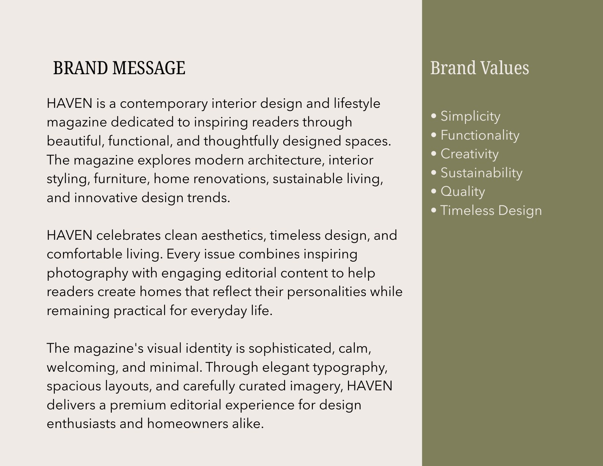
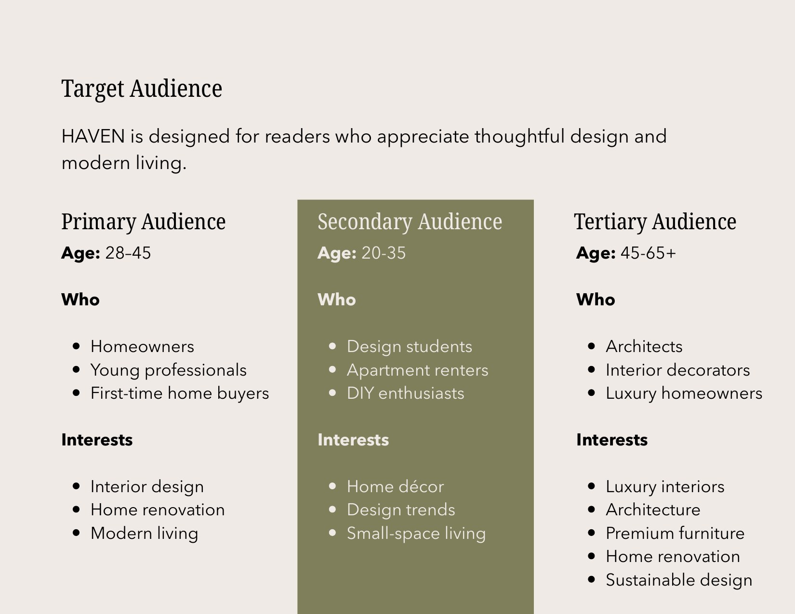
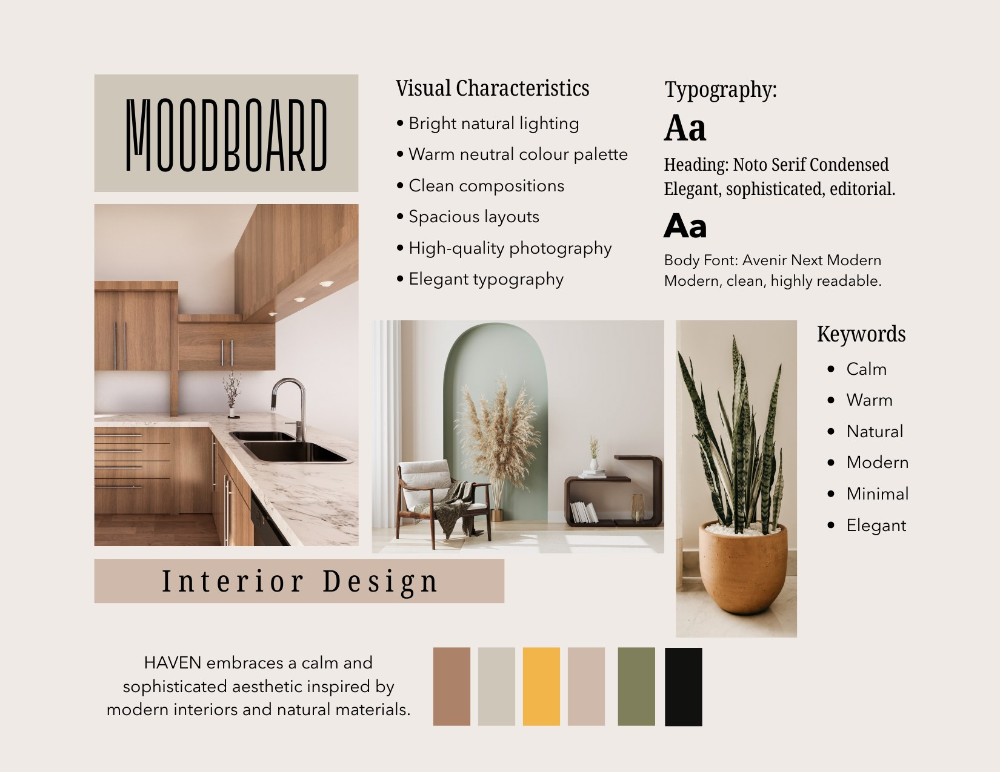
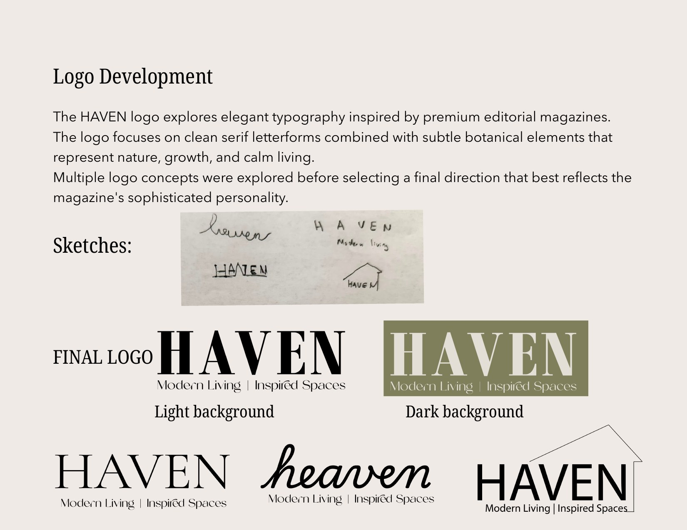
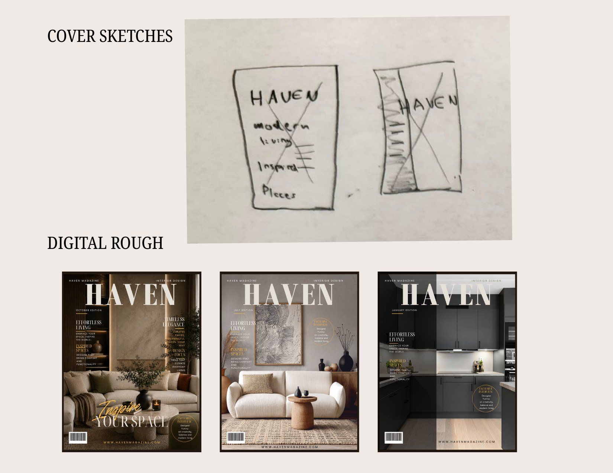
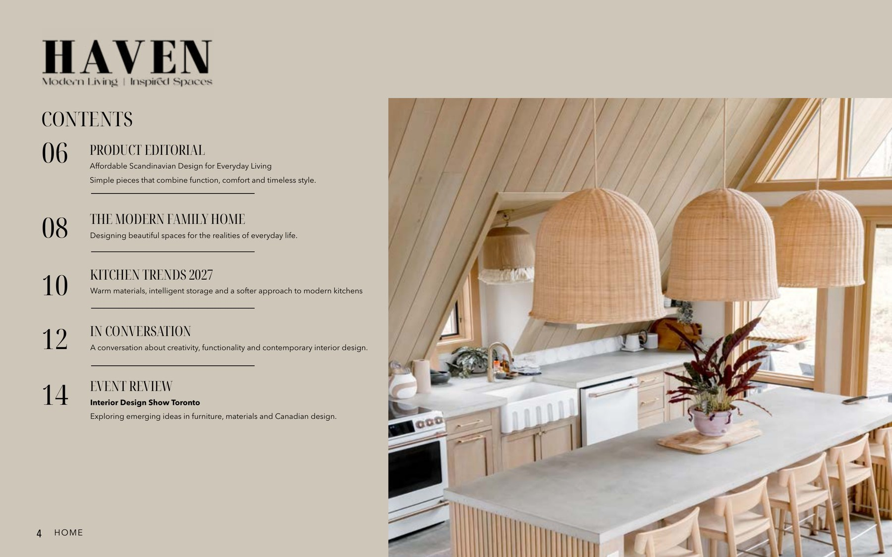
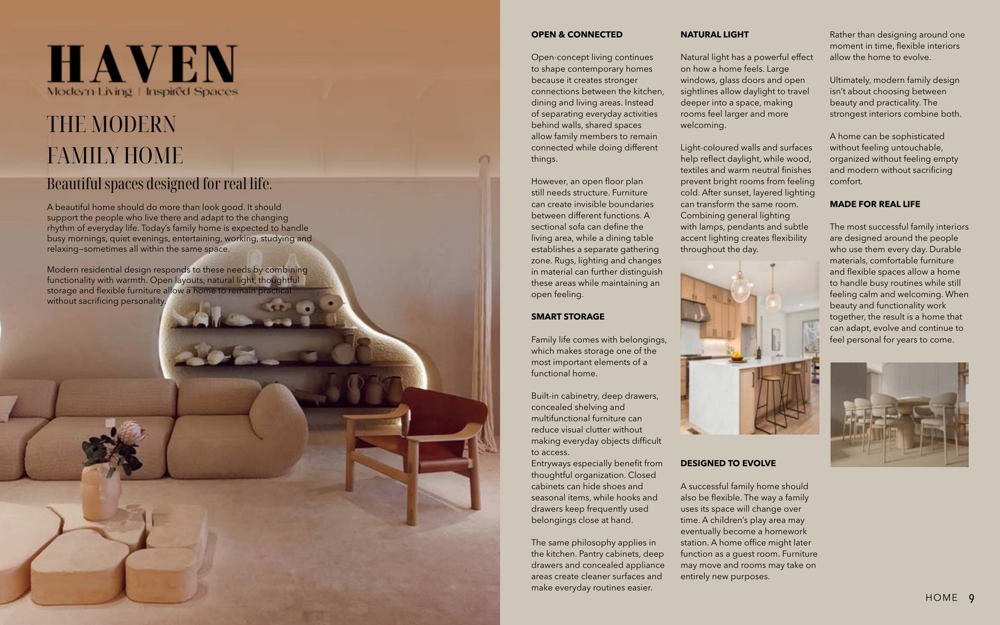
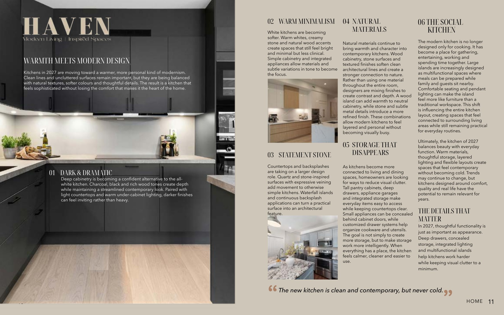
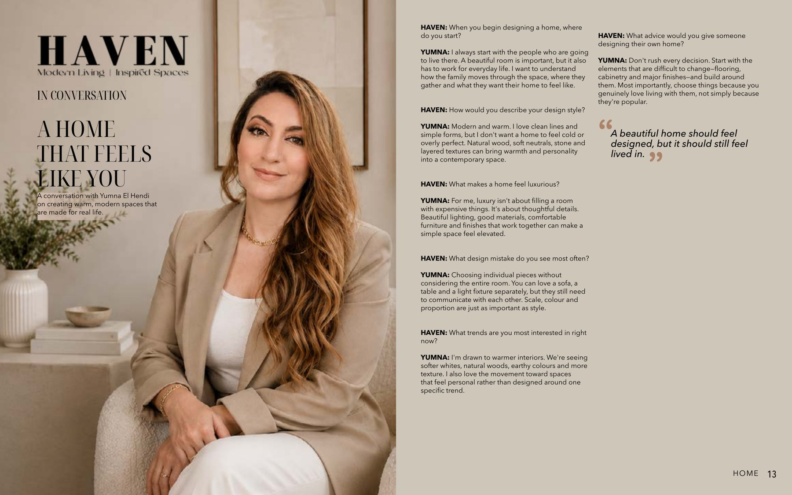

HAVEN Magazine
Modern Living | Inspired Spaces
Project Brief
HAVEN is a contemporary interior design and lifestyle magazine created to inspire beautiful, functional and thoughtfully designed spaces. The project combines brand development with editorial design, moving from audience definition and visual research through logo development, cover exploration and a complete launch issue.
The editorial direction focuses on modern interiors, architecture, furniture, renovation and emerging design trends, while the visual identity is sophisticated, calm, welcoming and minimal.

Strategy & Direction
The brand was developed around the idea that modern interiors can be both elevated and comfortable. Research and planning established the audience, brand values, personality, typography and visual language before the final magazine layouts were built.
Audience
The primary audience is homeowners, young professionals and first-time home buyers who appreciate thoughtful design and modern living. Secondary audiences include design students, apartment renters and DIY enthusiasts, with architects, interior decorators and luxury homeowners forming a tertiary audience.
Brand Personality
Sophisticated, elegant, warm, minimal, inspiring, modern, welcoming and authentic. The brand values simplicity, functionality, creativity, sustainability, quality and timeless design.
Visual Direction
The visual system uses bright natural lighting, warm neutral colours, clean compositions, spacious layouts, high-quality photography and elegant typography. Noto Serif Condensed supports the editorial headings, paired with Avenir Next for clean, readable body copy.
Editorial Content
The launch issue combines a product editorial, feature stories, kitchen trends, an interview and an event review. This creates a realistic editorial rhythm while allowing the visual system to work across different types of content.
Brand Development
The design process moved from strategy to moodboard, typography and logo development, followed by cover sketches and digital roughs before the final direction was selected.





Final Editorial System
The completed magazine applies the same visual identity across contents, product editorial, long-form features and interview layouts. Repeated typography, spacing, imagery and warm neutral tones create continuity while allowing each spread to have its own hierarchy.




Outcome
The final outcome is a cohesive launch issue supported by a complete brand direction. HAVEN moves consistently from strategy and audience research into logo, typography, cover design and multi-page editorial execution. The finished work demonstrates my ability to connect research and concept development with polished visual design, while maintaining hierarchy, consistency and a clear audience-focused message across multiple content formats.